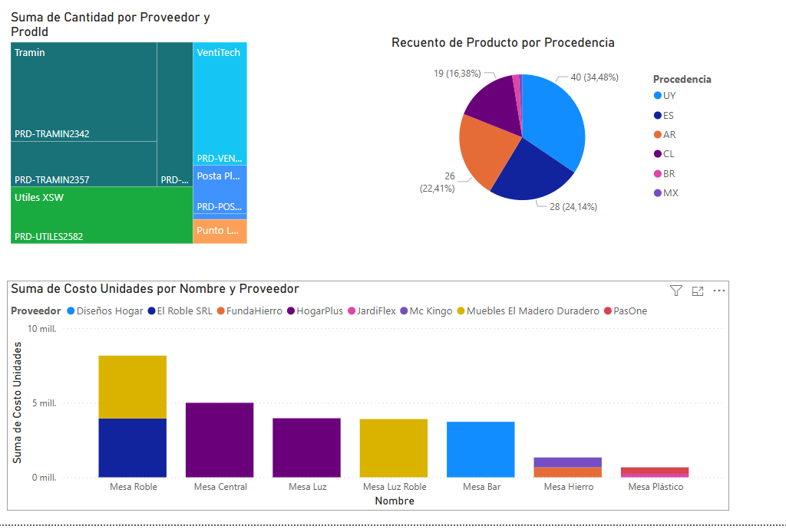
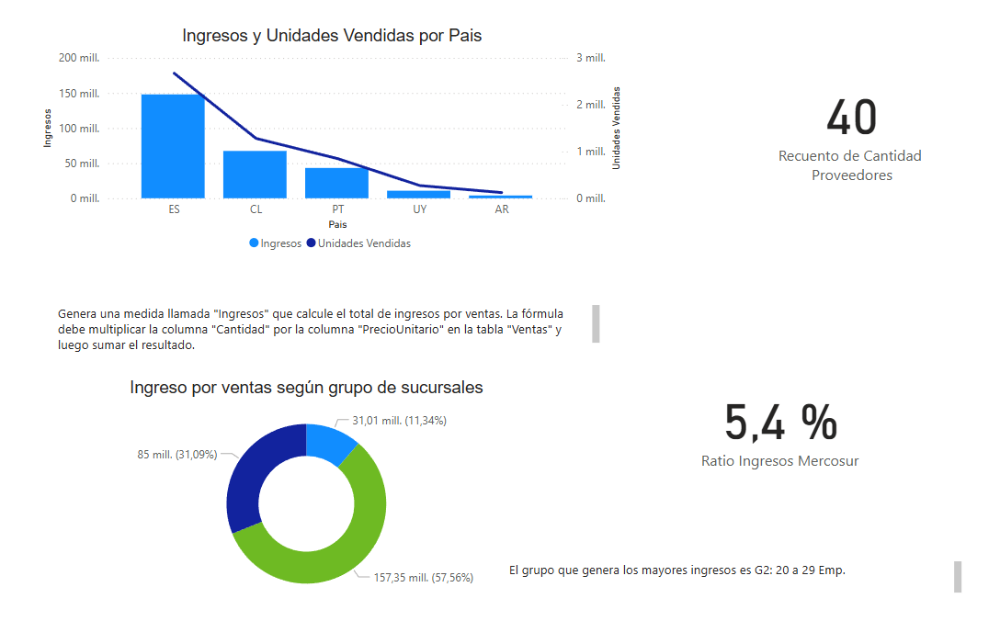

Dashboard de Datos
Este proyecto se enfoca en el modelado, depuración y análisis de un conjunto de datos transaccionales dentro del entorno de Power BI. El trabajo se centró en transformar grandes volúmenes de información bruta en insights visuales accesibles y accionables.
- Modelado de datos en Power Query sin DAX.
- Visualización de ventas, proveedores y sucursales.
- Manejo de más de 1.3 millones de filas.
Información por Producto
Exploración del volumen, costo y origen de productos por proveedor. Permite identificar patrones de abastecimiento y gasto.
Rendimiento Comercial
Vista regional de productos vendidos, facturación por país y desempeño por sucursal. Ideal para decisiones estratégicas.
